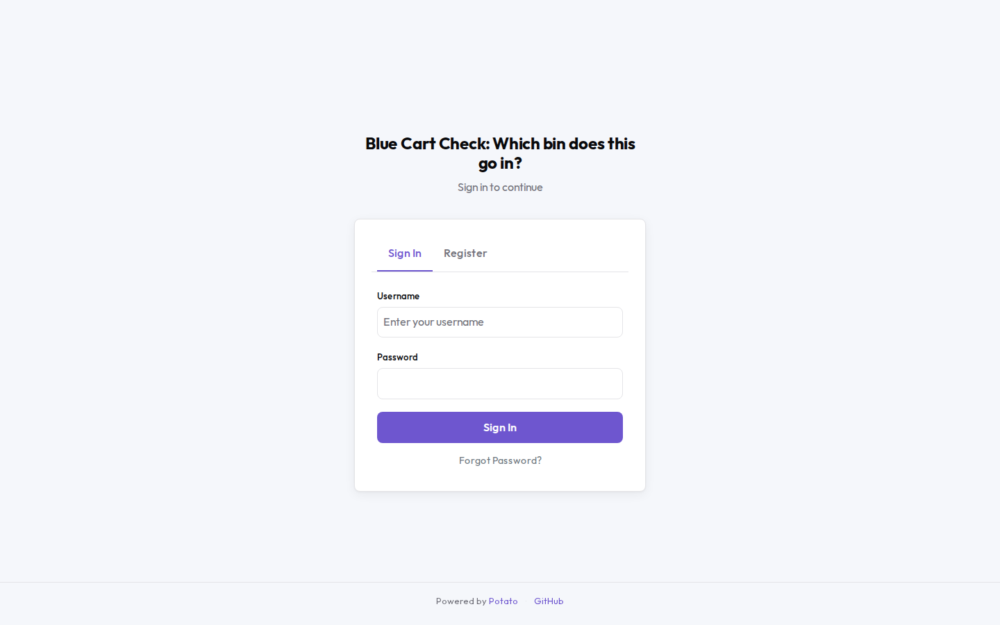
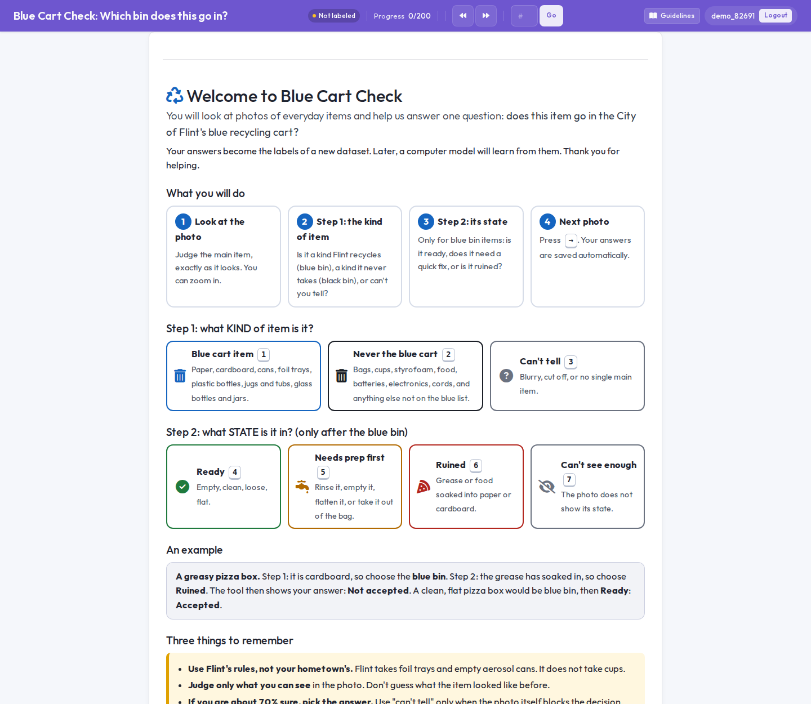
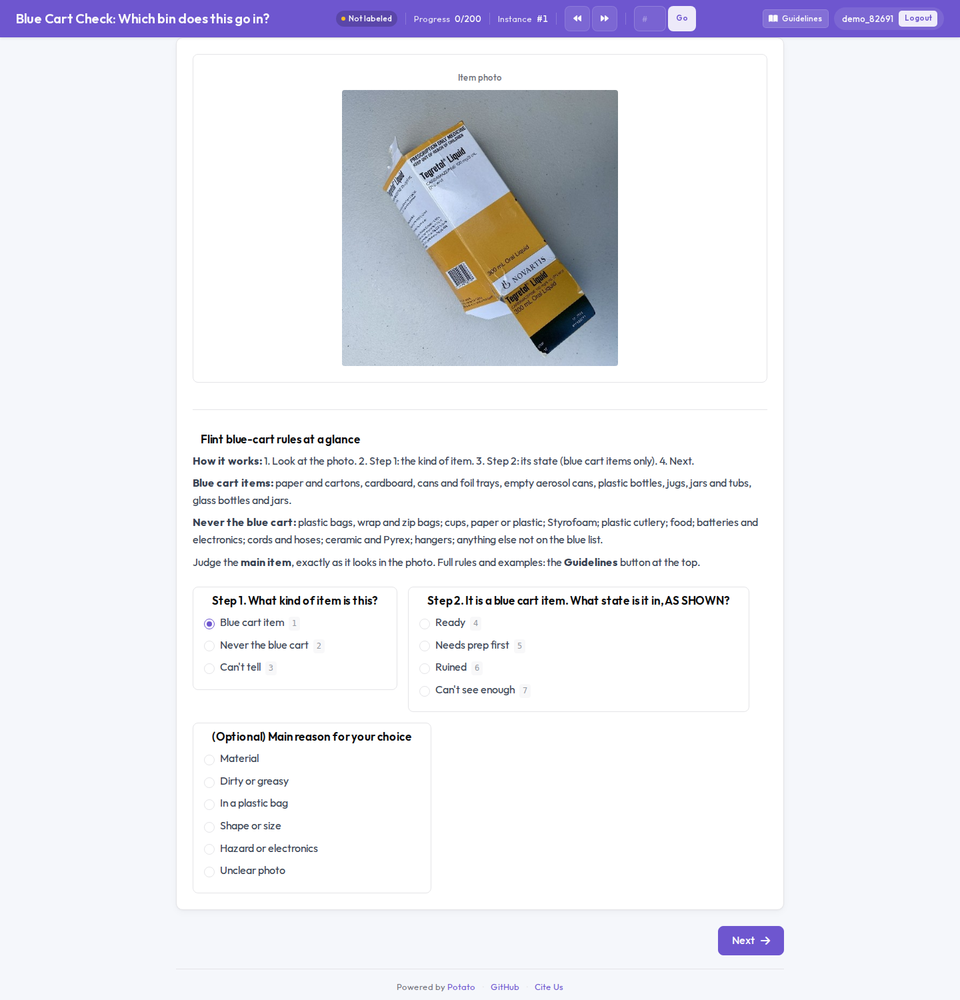
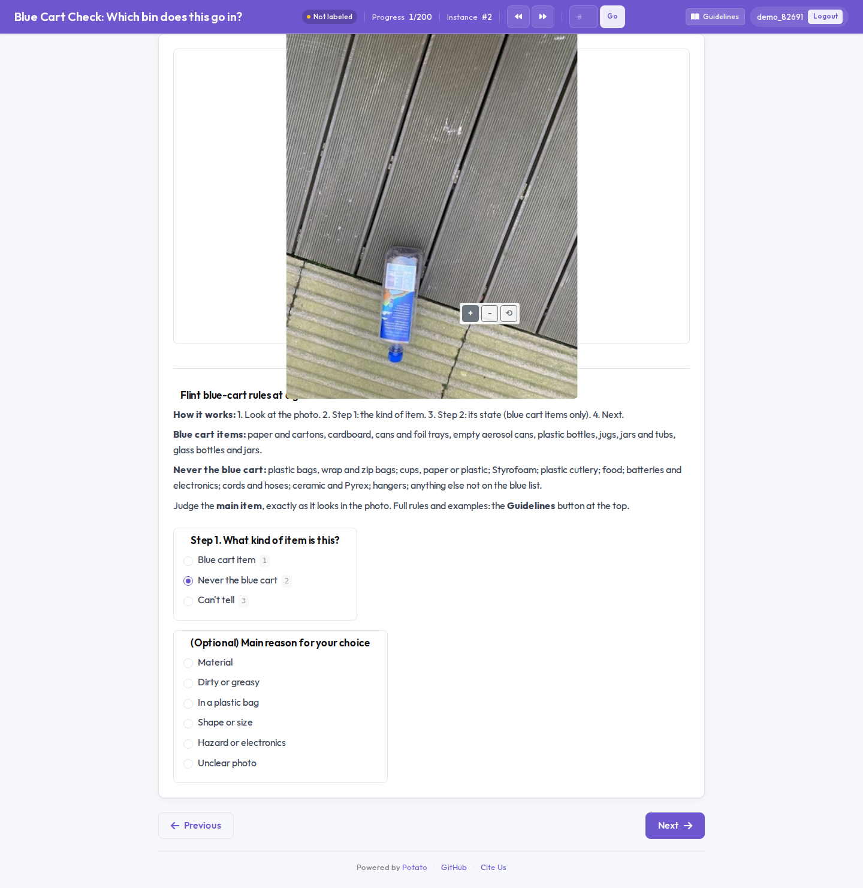
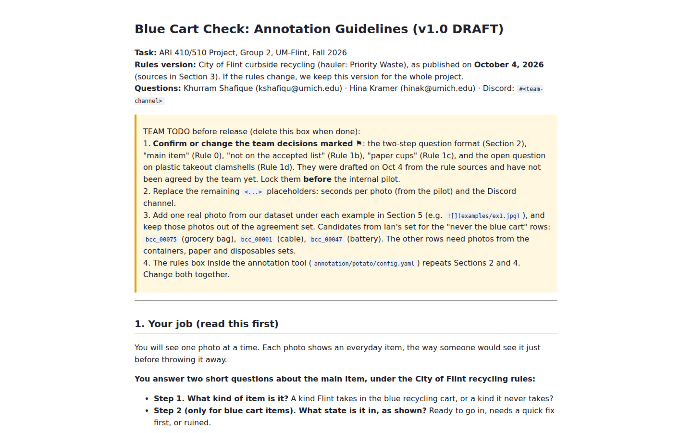
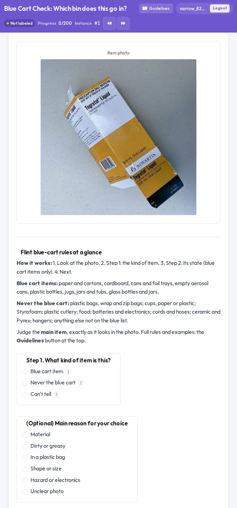
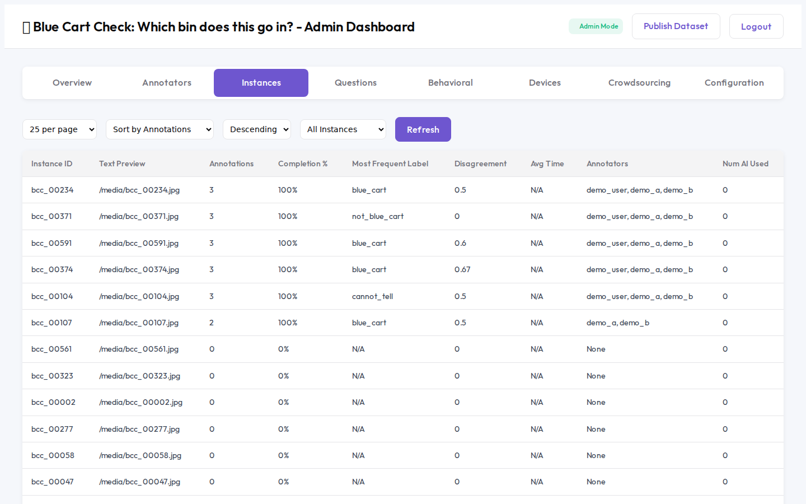
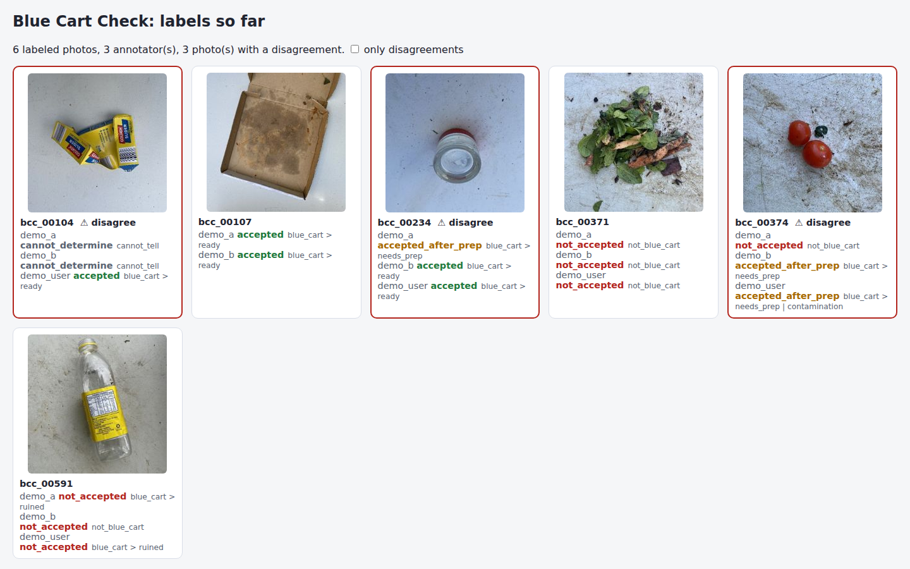

demo_user, demo_a, demo_b). The answers picked in them are clicks made to show the buttons.
They are not real labels.1The project in simple words
One question: does this item go in Flint's blue recycling cart?
- We take photos of everyday items: bottles, boxes, cups, cables, bags.
- People look at each photo and answer two small questions about it. These people are called annotators. They are our classmates and us.
- From their answers we get one label per photo, for example "accepted" or "not accepted".
- Later, a computer model learns from the photos and labels, so it can answer the question for a new photo.
Phase 1a is the first half of this: collect the photos, write the rules for the annotators, build the tool they will use, and present it in class.
The rules come from the City of Flint and its waste company, Priority Waste. They are special: for example, Flint takes foil trays and empty aerosol cans, but it does not take plastic cups. That is why annotators must follow our written rules and not what they do at home.
2Who collects which photos
The dataset has 648 photos; the current labeling round in the tool uses the first 617, and Hina's 31 photos, added on Oct 6, join the next round so the shared set stays fixed. Each of us is responsible for one set. 108 were taken by the team (Ian 77, Sep 28–29; Hina 31). The other 540 come from RealWaste (360), the Kaggle Drinking Waste set (160), and Wikimedia Commons (20). Those keep their original authors in data/attribution.csv. The set each person is responsible for is in the notes column of data/manifest.csv.
| Person | What they are responsible for | In the tool now |
|---|---|---|
| Daud | Containers: plastic bottles, jugs, tubs, glass jars, cans, foil trays, aerosol cans | 175 sourced photos metal containers (55), glass containers (40), glass bottles (40), cans (20), foil containers, spray cans, jars and tubs (20). None of these were taken by Daud. |
| Hina | Paper and cardboard: boxes, pizza boxes, newspaper, cartons, paper cups | 146 photos 31 taken by Hina (cereal, snack and medicine boxes, cartons, flyers, a notebook), added Oct 6 and in the tool from the next round, plus 115 sourced: cardboard (70), paper (45), from RealWaste. |
| Khurram | Campus disposables: coffee cups, plastic cups, lids, straws, cutlery, packets, styrofoam, takeout boxes, water bottles | 185 sourced photos plastic packaging (60), water bottles (40), milk jugs (40), cans (20), paper (25). His own campus photos are not in yet. |
| Ian | The "never" and hard cases: plastic bags, bagged recyclables, bubble wrap, hangers, cords and cables, batteries and small electronics, ceramic, unclear photos | 142 photos 77 taken by Ian (cords, batteries, bags, hangers, and other never-items), plus 65 sourced (mixed trash 30, food waste 10, textiles 10, garden waste 10, plastic 5). |
Daud, Hina, and Khurram can still add their own phone photos with prepare_images.py. That adds rows. It does not change who took the 540 sourced photos.
3The tool, step by step
Start: two ways to open the tool
potato start config.yaml -p 8000, open http://localhost:8000 in Chrome and type your uniqname. No password. If you come back later with the same name, you continue where you stopped. At the end you zip the annotation_output folder and send it to us.
The first time, a welcome page explains the task and the two steps on one screen. It also lists Group 2, the instructor and the teaching assistant. Press Start labeling to continue.

What you see
The photo is on the left. On the right, from top to bottom: the rules box, Step 1, Step 2 (only after a blue cart answer) and an optional reason. Hover over an answer for a one-line reminder of what it means. The top bar shows your progress, the photo number, jump buttons and the Guidelines button.
Step 1: what KIND of item is it?
In Step 1 you only think about the kind of item, not whether it is clean. A pizza box is cardboard, so it is a blue bin kind, even if it is greasy.
Step 2: what STATE is it in? (only after the blue bin)

Keys and buttons
| You do | What happens |
|---|---|
| Press 1 2 3, then 4 to 7 | The answer is selected, the same as clicking it. Keys 4 to 7 do nothing until Step 1 is "blue cart item". |
| Press → or click Next | Your answers are saved and the next photo appears. If a required step is unanswered, a red message asks for it. |
| Press ← or click Previous | You go back. Your old answers are still selected and you can change them. |
| Press another number | Your answer changes. |
| Hover over the photo, click + − ⟲ | Zoom in, zoom out, reset. |
| Click Guidelines (top right) | The full rules and examples open in a new tab. |
| Click the double arrows (top) | You jump to a photo you have not answered yet. |
| Look at Progress (top) | How many photos you have answered, for example 4/120. |



4From two answers to one label
The annotator never picks the final label. The computer makes it from the two answers. These four labels are the same four as in our proposal.
| Step 1 | Step 2 | Final label | Example |
|---|---|---|---|
| Blue bin | Ready | accepted | Clean, flat cardboard box |
| Blue bin | Needs prep first | accepted_after_prep | Jar with sauce still inside |
| Blue bin | Ruined | not_accepted | Greasy pizza box |
| Blue bin | Can't see enough | cannot_determine | Closed container, can't see if it is empty |
| Black bin | (not asked) | not_accepted | Charging cable, plastic bag, coffee cup |
| Question mark | (not asked) | cannot_determine | Blurry photo |
Why two steps? The proposal says the label "is a combination, not a lookup": first what the item is, then what state it is in. Two easy questions are simpler for a person than one hard four-way choice. It also lets us see where people disagree: about the kind of item, or about its state.
5Where the answers go and how to see them
Every click is saved automatically in a folder called annotation_output, one sub-folder per annotator. For the shared link that folder is on Khurram's computer (deploy/local_server/annotation_output), so nobody has to send anything. For a zip pack it is next to the tool, and the annotator zips it and sends it to us.
Way 1: in the browser (the admin dashboard)
Open https://bluecart.khurramshafique.com/admin (shared link) or http://localhost:8000/admin (own copy). It asks for an admin key. The key is not a password anyone chose: the tool writes it into a file called admin_api_key.txt the first time anyone opens the admin page, in the folder the tool was started from.
cat deploy/local_server/admin_api_key.txtCopy the long text it prints and paste it into the admin page.
potato start:cat admin_api_key.txtOn Windows, open the file in Notepad instead. Each copy of the tool has its own key.
After the key, the Instances tab shows each photo, how many people answered it, the most frequent answer and a disagreement score. The Questions tab shows how often each answer was used. The Annotators tab shows how many photos each person has labeled.

Way 2: one page with all labeled photos
cd ~/workspace-school/bluecart/blue-cart-check .venv/bin/python scripts/show_labels.py --returned deploy/local_server # the shared link .venv/bin/python scripts/show_labels.py --returned annotation/packs/internal_01 # a pack
It prints a table and makes labels_review.html. A red border means two people gave different labels. Those are the photos the team should talk about. labeling_time.py gives the seconds per photo from the same files.
